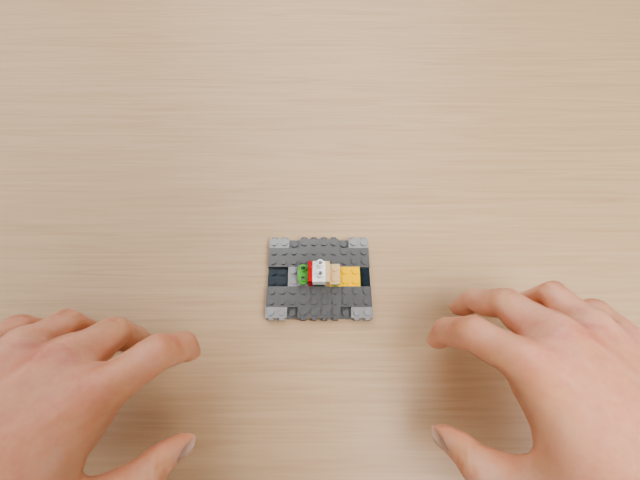
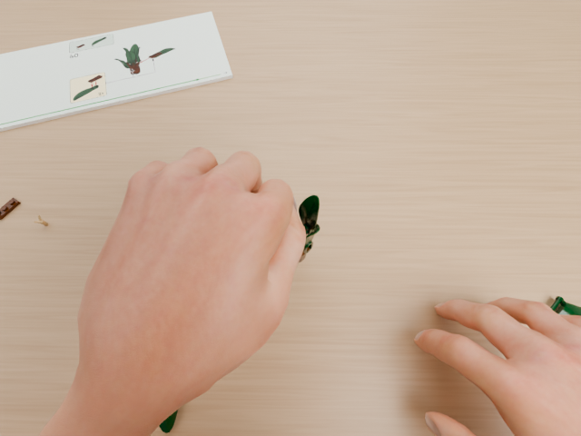
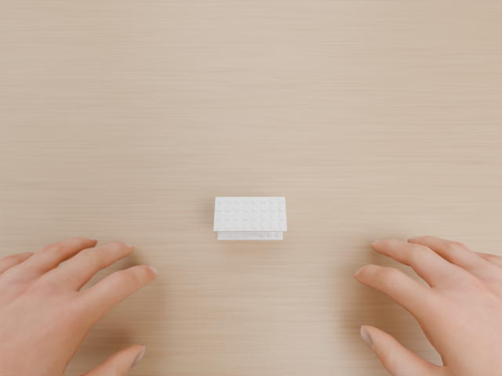
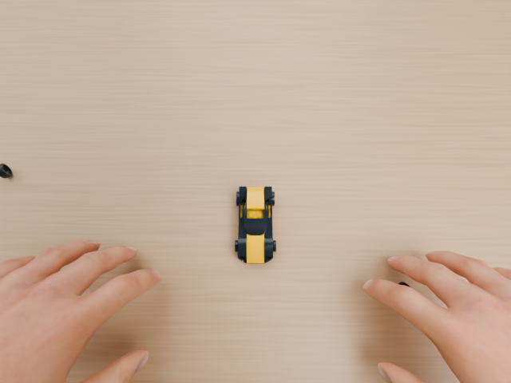
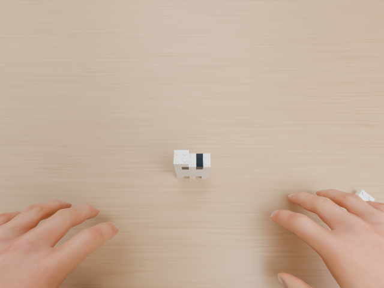
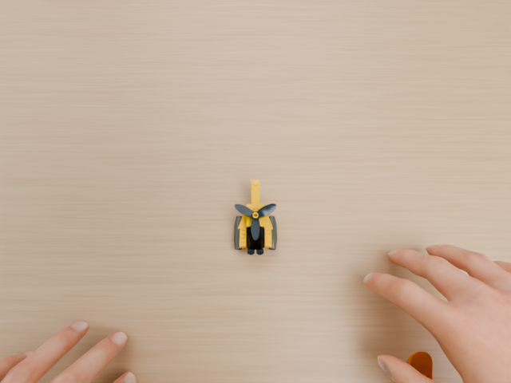
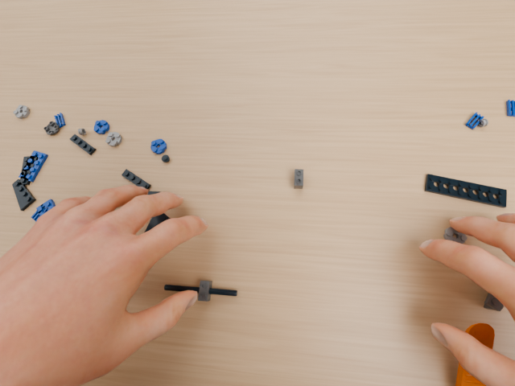

Shared-pipeline evaluation. The generalization gallery reports all 21 current cases and 126 probes. The cases are previously exposed data; failed and unexecuted probes remain in their denominators.
1 Models2 Build videos3 How it works4 Actions
5 Failure codes6 Mistakes7 Scene8 Outputs9 Validation10 Limits
1. Models we simulate
7 real-set model selections in the current example campaign. Thumbnails show final frames of current public-API episodes; they do not imply the full original set is complete. The 10348 example is a manual prefix, not the complete 473-part build.

10348-1/manual_prefix_05
10348-11 current inputs · 1 videos

10349-1/scenario_understand_instruction
10349-15 current inputs · 4 videos

1211-2/scenario_misgrasp
1211-218 current inputs · 11 videos

30036-1/scenario_too_few_copies
30036-14 current inputs · 3 videos

40013-1/scenario_recovery_guidance
40013-117 current inputs · 16 videos

4348-1/separator_plate_below
4348-15 current inputs · 4 videos

8028-1/separator_axle_push
8028-11 current inputs · 1 videos
2. Current build and recovery videos
17 selected episodes cover construction, handling and recovery in the existing video-card format. The scope of each fixture or checkpoint excerpt is stated below. A scenario can resolve while the full configured task remains incomplete.
Construction and subassemblies Support, reorientation and part handling Mistakes, retries and recovery
Construction and subassemblies
Rest a partial build on an oblique face, then continue
Build two connected slopes in hand, release the incomplete component at a stable 45-degree pose, brace it, and add the remaining plate along its tilted connector axis.
Three-part fixture generated through public Sim actions and the resting-placement planner. Initial acquisition, incomplete resting, continued construction and final release are all visible.
Execution: completed · configured task complete: True. Scenario: not_requested.
No scenario selected
engine: passed · replay: passed · motion: visual_review_required · contact: failed · render: completed · visual review: issues_observed.
Recorded actions: pick, hold_model, place, reorient_model, set_down_model, pause, brace_model, mate, release_brace.
19.10 s · 191 frames · 10 fps · current head-camera recording.
Start from a picked base and build in hand
Keep the original left-hand grasp on the picked base while the right hand adds a second brick and a plate, then reorient the complete component and set it down sideways.
Three-part fixture with no table-construction prefix or hidden initial acquisition. Engine, intended support, motion and rendered contact are evaluated separately.
Execution: completed · configured task complete: True. Scenario: not_requested.
No scenario selected
engine: passed · replay: passed · motion: visual_review_required · contact: failed · render: completed · visual review: issues_observed.
Recorded actions: pick, hold_model, mate, reorient_model, set_down_model, pause.
15.90 s · 159 frames · 10 fps · current head-camera recording.
Manual prefix: steps 1–5, 18 of 473 parts
An instruction-linked construction sequence from LEGO 10348.
Only the first five manual steps are represented; this is not a complete set build.
Execution: completed · configured task complete: True. Scenario: not_requested.
No scenario selected
engine: passed · replay: passed · motion: not_certified · contact: failed · render: completed · visual review: issues_observed.
Recorded actions: pick, place, brace_model, release_brace, hold_model, attach, set_down_model.
110.30 s · 1103 frames · 10 fps · current head-camera recording.
Interleaved copies, continued growth and installation
Build children of copies A and B, partially join both copies, add caps to the joined modules, then install them.
Nine-part construction fixture demonstrating the shared scheduling and subassembly API.
Execution: completed · configured task complete: True. Scenario: not_requested.
No scenario selected
engine: passed · replay: passed · motion: not_certified · contact: failed · render: completed · visual review: issues_observed.
Recorded actions: pick, place, attach.
47.40 s · 474 frames · 10 fps · current head-camera recording.
Attach a module while holding the host
One hand lifts and holds the host while the other attaches a prepared module, followed by setting down the combined assembly.
Three-brick fixture; module construction precedes the visible checkpoint. Render window: start_after=module_cap.
Execution: completed · configured task complete: True. Scenario: not_requested.
No scenario selected
engine: passed · replay: passed · motion: visual_review_required · contact: failed · render: completed · visual review: issues_observed.
Recorded actions: hold_model, attach, set_down_model.
9.60 s · 96 frames · 10 fps · current head-camera recording.
Support, reorientation and part handling
Sideways bracing, insertion and pressing
Turn the build, maintain a table brace, attach and press a part, then release the brace.
Authored fixture for persistent support and pressing along the connection direction.
Execution: completed · configured task complete: True. Scenario: not_requested.
No scenario selected
engine: passed · replay: passed · motion: not_certified · contact: failed · render: completed · visual review: issues_observed.
Recorded actions: pick, place, turn_build, brace_model, mate, press, pause, release_brace.
16.55 s · 331 frames · 20 fps · current head-camera recording.
Lift, tilt and set down a small brick
Lift a red brick, reorient it in two stages, and set it down in its new orientation.
Single-brick orientation probe; this recording does not demonstrate multi-part rigidity. Endpoint support and rendered hand contact are separate checks.
Execution: completed · configured task complete: True. Scenario: not_requested.
No scenario selected
engine: passed · replay: passed · motion: not_certified · contact: failed · render: completed · visual review: issues_observed.
Recorded actions: pick, place, hold_model, reorient_model, set_down_model.
13.30 s · 133 frames · 10 fps · current head-camera recording.
Regrasp, inspect and transfer
Acquire a part, change the grasp, inspect it, and transfer it to the other hand.
Handling probe ending before final assembly; task completion is not its acceptance criterion.
Execution: completed · configured task complete: False. Scenario: not_requested.
No scenario selected
engine: passed · replay: passed · motion: not_certified · contact: failed · render: completed · visual review: issues_observed.
Recorded actions: pick, regrasp, inspect, transfer.
16.60 s · 166 frames · 10 fps · current head-camera recording.
Clear clutter while holding a brick
Keep a red brick in one hand while the other sweeps a loose part aside, then set the held brick down.
Authored pile-clearing probe ending before final assembly; it does not demonstrate autonomous recognition of hidden parts.
Execution: completed · configured task complete: False. Scenario: not_requested.
No scenario selected
engine: passed · replay: passed · motion: not_certified · contact: failed · render: completed · visual review: issues_observed.
Recorded actions: pick, place, hold_model, sweep_part, set_down_model.
17.80 s · 178 frames · 10 fps · current head-camera recording.
Build and articulate a connected branch
Brace the host, attach a branch, move it about its connection, and release support.
Round-bearing articulation fixture with the connection preserved.
Execution: completed · configured task complete: True. Scenario: not_requested.
No scenario selected
engine: passed · replay: passed · motion: not_certified · contact: failed · render: completed · visual review: issues_observed.
Recorded actions: pick, place, brace_model, mate, articulate_connection, pause, release_brace.
16.90 s · 338 frames · 20 fps · current head-camera recording.
Mistakes, retries and recovery
Miss a grasp, retry and place — 1211
Close beside the target without acquiring it, reopen, then retry the pick and complete the placement.
Scripted non-acquiring grasp and explicit retry; engine recovery does not certify the rendered finger contact. Render window: start_after=a037, stop_after=a039.
Execution: completed · configured task complete: True. Scenario: resolved.
Target reacquired through a later successful engine pick; rendered acquisition is evaluated separately
engine: passed · replay: passed · motion: not_certified · contact: failed · render: completed · visual review: issues_observed.
Recorded actions: attempt_grasp, pick, place.
7.50 s · 90 frames · 12 fps · current head-camera recording.
Detach and reseat a part — 40013
Remove a connected part, pause, then return it to its required position.
Scripted detachment and reseating; the recording does not simulate an accidental impact. Render window: start_after=a035_support_release.
Execution: completed · configured task complete: True. Scenario: resolved.
Recovery verified in the engine; review the rendered motion
engine: passed · replay: passed · motion: not_certified · contact: failed · render: completed · visual review: reviewed_with_limitations.
Recorded actions: remove, pause, place.
6.58 s · 79 frames · 12 fps · current head-camera recording.
Notice and correct a placement mistake
Make an incorrect placement, notice it, remove and replace the part, then continue construction.
Small authored recovery fixture; the notice action is scripted, not a measured cognitive process.
Execution: completed · configured task complete: True. Scenario: resolved.
Recovery verified in the engine; review the rendered motion
engine: passed · replay: passed · motion: not_certified · contact: failed · render: completed · visual review: issues_observed.
Recorded actions: pick, place, mate, notice, remove.
16.53 s · 496 frames · 30 fps · current head-camera recording.
Request guidance and repair — 40013
A help-request sequence includes noticing, pointing, removal and replacement.
Recovery-scenario outcome is separate from overall build completion; communication is authored. Render window: start_after=a029. The initial model hold was acquired before this visible window.
Execution: completed · configured task complete: False. Scenario: resolved.
Configured scenario completed without introducing a task or procedure error; cognition is unevaluated
engine: passed · replay: passed · motion: failed · contact: failed · render: completed · visual review: issues_observed.
Recorded actions: pick, set_down_model, mate, notice, point, remove, place, pause.
14.92 s · 179 frames · 12 fps · current head-camera recording.
Orientation and repeated-copy corrections — 10349
Correct an upside-down leaf, work through repeated modules, and remove extra copies. Gallery case 3 includes the timed dialogue.
Selected Dracaena construction excerpt with authored instruction context; it does not complete the entire set or verify official manual order. Render window: start_after=a023, stop_after=a035. The initial model hold was acquired before this visible window.
Execution: completed · configured task complete: False. Scenario: resolved.
Sequential scenario outcomes are recorded separately
engine: passed · replay: passed · motion: visual_review_required · contact: failed · render: completed · visual review: issues_observed.
Recorded actions: pick, mate, pause, notice, remove, place, point, attach, set_down_model, put_down.
53.25 s · 639 frames · 12 fps · current head-camera recording.
An attempted repair that remains wrong — 40013
Remove a wrongly placed part, attempt another placement, and stop with the task error still present.
Intentionally unresolved recovery. A completed execution and video are not a successful repair. Render window: start_after=a029. The initial model hold was acquired before this visible window.
Execution: completed · configured task complete: False. Scenario: unresolved.
Task/procedure error remains; no successful recovery established
engine: passed · replay: passed · motion: failed · contact: failed · render: completed · visual review: reviewed_with_limitations.
Recorded actions: pick, set_down_model, mate, remove, pause.
12.00 s · 144 frames · 12 fps · current head-camera recording.
3. How it works
Current API workflow and construction controls
Both Python callers and JSON episodes use Sim. Requests produce an action journal, engine feedback and task progress. Offline motion generation adds trajectories and intended hand contacts; fitting produces evaluated hand poses; rendering writes the head-camera images and labels. The shared exporter derives timed dialogue and causal training samples from that run.
Canonical goal coordinates are separate from committed assembly and subassembly transforms. Construction recipes can interleave any number of distinct copies and nested modules. Built and installed progress are separate; changing a rigid pose does not erase an incorrect connection or misplaced part. Stable placement, connector access and hand ownership can each refuse an action. Support-checked construction and settling have narrower guarantees than a general force simulation; legacy canonical state and authored loose-part put-down retain their documented scopes.
Sim.plan_resting_placement(pid, rotation=..., center_xz=...) proposes ordinary public actions for the actual connected component, including incomplete builds. The requested rotation is relative to the current world pose; center_xz sets the horizontal mean of part centers in LDU. An explicit unstable rotation is refused; omitting it enables a bounded deterministic search over mesh support faces. The plan preserves relative part geometry and canonical goals, and reports endpoint support separately from motion and hand feasibility. Large components can use the existing bimanual turn when its preconditions hold; unsupported relocation strategies remain explicit.
In coherent mode, pick(pid, hand="L") followed by hold_model(pid, hand="L", M=...) can retain the acquired root grasp and start construction in the hand. M is a rigid world displacement, and subsequent placements and connector mating use the held component’s committed frame. There is no required table-construction prefix. Explicit model set-down checks the resulting component’s full-mesh support polygon under the declared mass proxy. Only one persistent model hold is supported at a time; a second separate hold_model is refused. A legacy hold without M retains its presentation-only semantics.
| Capability / input | Scope | Current result |
|---|
| Interleaved and nested copies | Separate part and instance IDs; partial joins and growth after joining. | Engine: passed; motion: not_certified; render: completed · Evidence |
| Table stabilization | Explicit brace ownership retained across actions and checkpoints. | Engine: passed; motion: not_certified; render: completed · Evidence |
| Regrasp and support exchange | The helper supports before the owner releases and acquires a different region. | Engine: passed; motion: not_certified; render: completed · Evidence |
| Stable poses of partial and complete components | Two connected slopes rest on an oblique support face while the third target is unbuilt; a table brace supports continued construction in that pose. | Engine: passed; motion: visual_review_required; render: completed · Evidence |
| Construction in the supporting hand | Keep the picked root in the same hand, add parts to its committed connector frame, then release the connected model at a checked sideways pose. | Engine: passed; motion: visual_review_required; render: completed · Evidence |
| Settled loose parts | Seeded mixed orientations and stacking; settling and support checks are distinct from human grasp feasibility. | Engine: passed; motion: not_certified; render: completed · Evidence |
| Clearing clutter while holding | The free hand can move an obstructing part. Searching is authored; no visual detector is implied. | Engine: passed; motion: not_certified; render: completed · Evidence |
| Connected articulation | Move an allowed connected branch through its connector-defined degrees of freedom. | Engine: passed; motion: not_certified; render: completed · Evidence |
| Manual construction prefix | LEGO 10348 steps 1–5: 18 of 473 parts. This is not the complete booklet. | Engine: passed; motion: not_certified; render: completed · Evidence |
Explicit actions, refusals and recovery remain in the journal. A completed video does not establish that every named scenario was demonstrated; see the scenario outcomes below. Motion proposals and geometric contact diagnostics do not establish continuous physical feasibility or downstream transfer.
Recorded action coverage
Attempts include preparation outside the render window. Rendered counts use frame action labels in current complete videos; they do not certify visible contact, successful task completion or physical feasibility.
34 of 34 verbs attempted; 32 represented by rendered frame labels. Per-episode measurements and refusal codes.
4. Action reference
All 34 public verbs have their own card. 32 have newly generated, frame-bound demonstration clips. Unsupported paths keep their exact failure records. Phase labels describe the generated motion; they do not prove contact. Engine, motion, contact and appearance are independent.
5 supplemental public-JSON examples add 3 complete recordings. Their results are separate from the primary 114-case campaign. The action clips are excerpts of these and the primary recordings, not extra independent episodes.
pickManipulation
pick(pid, hand='R')
Parameters
pid | required; string |
hand | 'R'; string; choices L, R |
Precondition (all must hold)
- the part exists
- the part lies loose on the table (also after it fell there) or rests on the build without clicking in
- that hand is empty
Effect
The part is in the hand.
Failure codes
- NO_SUCH_PART
- NOT_FREE
- HAND_BUSY
Recorded motion phase labels
reach for Brick 2 x 4 → grasp
17 frames · 10 fps · 1.70 s. Source frames 1–17; includes transition context.
Engine: passed · replay: passed · motion: not_certified · hand contact: failed · source visual review: issues_observed.
attempt_graspManipulation attempt (clean miss)
attempt_grasp(pid, hand='R', clearance_ldu=30.0)
Parameters
pid | required; string |
hand | 'R'; string; choices L, R |
clearance_ldu | 30.0; number; LDU; Nominal empty-pinch clearance beyond the target mesh bounds; actual skin is evaluated separately. |
Precondition (all must hold)
- the part exists and is loose on the table or resting unconnected on the build
- the selected hand is empty
- the offset is finite and within the allowed range
Effect
Record a clean missed pinch of a loose part, without acquiring it.
This deliberately scheduled execution failure closes in empty space on
the chosen hand's side and above the transformed mesh bounds. Clearance
describes the nominal pinch point in LDU, not measured skin clearance.
Actual hand motion, closure and noncontact require renderer evidence.
No retry, object displacement, force or loss of an established grasp is
implied. A successful retry is a separate pick action.
Failure codes
- NO_SUCH_PART
- NOT_FREE
- HAND_BUSY
- GEOMETRY_UNAVAILABLE
Recorded motion phase labels
Try to pinch the part, but close on empty space beside it: approach → Try to pinch the part, but close on empty space beside it: close empty → Try to pinch the part, but close on empty space beside it: lift empty → Try to pinch the part, but close on empty space beside it: reopen → Try to pinch the part, but close on empty space beside it: withdraw
35 frames · 12 fps · 2.92 s. Source frames 1–35; includes transition context.
Engine: passed · replay: passed · motion: not_certified · hand contact: failed · source visual review: issues_observed.
attempt_directionScripted manipulation attempt
attempt_direction(pid, T, direction)
Parameters
pid | required; string |
T | required; array; shape [4, 4]; LDU |
direction | required; array; shape [3]; direction |
Precondition (all must hold)
- the brick is held
- the target pose has a real connection
- the approach is incompatible with the joint axis
Effect
Script an incompatible approach to a real joint, without attaching.
The direction is compared with the intended joint axis. This records a
kinematic attempt, not a force or collision simulation.
Failure codes
Recorded motion phase labels
approach wrong side → attempt sideways → back away → reset
32 frames · 12 fps · 2.67 s. Source frames 12–43; includes transition context.
Engine: passed · replay: passed · motion: visual_review_required · hand contact: failed · source visual review: reviewed_with_limitations.
release_partScripted handling failure
release_part(pid, T, kind='drop')
Parameters
pid | required; string |
T | required; array; shape [4, 4]; LDU |
kind | 'drop'; string; choices slip, drop |
Precondition (all must hold)
- the brick is held
- the landing transform is finite and homogeneous
- in coherent state the endpoint has stable full-mesh table support and clears static obstacle body bounds
Effect
Lose a held part to an authored landing pose (scripted slip or drop).
The renderer animates grasp loss and falling. No impact/force dynamics
are inferred from the authored endpoint. Coherent state requires the
full mesh to have stable table support and a clear endpoint. Landing
on loose parts or a build needs settling dynamics and is not inferred.
Failure codes
- NOT_HELD
- UNSTABLE_LANDING
- LANDING_COLLISION
Recorded motion phase labels
carry → release → fall → landed → release → withdraw
33 frames · 12 fps · 2.75 s. Source frames 12–44; includes transition context.
Engine: passed · replay: passed · motion: visual_review_required · hand contact: failed · source visual review: reviewed_with_limitations.
mateManipulation (connector level)
mate(pid, using, onto, at, turn=0.0, slide=None, seat=1.0, flip=1, residual=None, within=None, in_hand=False, schema=None)
Parameters
pid | required; string |
using | required; Connector index or [face, column, row] grid address. |
onto | required; string |
at | required; Connector index or [face, column, row] grid address. |
turn | 0.0; number |
slide | None; number |
seat | 1.0; number |
flip | 1; number |
residual | None; array; shape [4, 4]; LDU |
within | None; array |
in_hand | False; boolean |
schema | None; The JSON interface uses the default connector schema (null). |
Precondition (all must hold)
- the part is held
- q is built
- connector types are compatible (male–female, same profile class)
- a short connector (a stud) is not already taken
- no interpenetration at the solved pose
- the way in is clear: pushed along the joint axis from a stud height out, it hits nothing that is not already touching it (stud-length joints; exact reference poses are exempt from this engine check, so the rendered approach needs a separate mesh-path review)
Effect
Put connector `using` of the held part into connector `at` of the built part `onto`, turned by `turn` degrees
about the axis, `slide` LDU along the axis (default: from `seat`; 0 = fully seated, positive = backed off), `flip` = axis sense, plus an
optional small `residual` 4x4 (misalignment, in the target connector's frame). The pose is solved from the two
connector frames. Outcome: mated (all engagements at that pose recorded) if it engages, possibly after
self-aligning within the capture tolerance; if it doesn't engage, resting on the build (on the connector tips)
when that is on top, or fell (onto the table) when it would hang under or beside the build; rejected only for
interpenetration or a broken precondition.
in_hand: the target model is held in the other hand (motion/labels only; the state is the same).
Failure codes
- NOT_HELD
- TARGET_NOT_BUILT
- INCOMPATIBLE
- OCCUPIED
- COLLISION
- APPROACH_BLOCKED
- NO_SUCH_CONNECTOR
Recorded motion phase labels
lift → carry → align → press on → release → retract
60 frames · 20 fps · 3.00 s. Source frames 180–239; includes transition context.
Engine: passed · replay: passed · motion: not_certified · hand contact: failed · source visual review: issues_observed.
placePose level (fallback)
place(pid, T, seat=1.0, start=False, within=None)
Parameters
pid | required; string |
T | required; array; shape [4, 4]; LDU |
seat | 1.0; number |
start | False; boolean |
within | None; array |
Precondition (all must hold)
- the part is held
- at the pose it engages the model (connectors, or a trusted link from the official model) unless start
- no interpenetration
Effect
Put a held part at pose T (its fully seated pose). seat<1 leaves it short of the seated pose along the
connection axis. start=True starts a new assembly on the table (no connection needed).
Failure codes
- NOT_HELD
- NO_CONNECTION
- COLLISION
Recorded motion phase labels
lift → carry → align → press on → release → retract
38 frames · 12 fps · 3.17 s. Source frames 12–49; includes transition context.
Engine: passed · replay: passed · motion: not_certified · hand contact: failed · source visual review: reviewed_with_limitations.
pressManipulation
press(pid)
Parameters
Precondition (all must hold)
- the part is built in
- at least one of its connections is not fully seated
- a hand is free
Effect
The part advances along the current connector insertion axis, including horizontal or inverted joints. A compatible official pose can inform the seating depth; lateral and angular mistakes are retained. Connections are recomputed and coherent support is checked before committing. This is a kinematic seating action, not a force measurement.
Failure codes
- NOT_ATTACHED
- FULLY_SEATED
- NO_FREE_HAND
- UNSTABLE_PLACEMENT
Recorded motion phase labels
reach along the press axis → fingertip contacts the part → press along the connector axis → open before withdrawal → retract the released hands
57 frames · 20 fps · 2.85 s. Source frames 224–280; includes transition context.
Engine: passed · replay: passed · motion: not_certified · hand contact: failed · source visual review: issues_observed.
removeManipulation
remove(pid, hand='R')
Parameters
pid | required; string |
hand | 'R'; string; choices L, R |
Precondition (all must hold)
- the part is built in (or rests on the build: then it is simply taken)
- that hand is empty
- it can come off: one direction frees every joint (a stud or pin joint only along its out-direction; a part on a bar or axle longer than its hole slides either way, the free tip first; two opposed joints with one partner let go away from it), and pulled clear along it, it hits no part placed after it
Effect
Its connections are deleted and the part is in the hand.
Failure codes
- NOT_ATTACHED
- HAND_BUSY
- BLOCKED
- NO_GRIP (fingers can't get at two opposite sides, or a thin plate sits flush: use pry)
Recorded motion phase labels
reach for Brick 2 x 2 → grasp → pull off → lift
74 frames · 30 fps · 2.47 s. Source frames 223–296; includes transition context.
Engine: passed · replay: passed · motion: not_certified · hand contact: failed · source visual review: issues_observed.
put_downManipulation
put_down(pid, T)
Parameters
pid | required; string |
T | required; array; shape [4, 4]; LDU |
Precondition (all must hold)
Effect
The part lies loose on the table at the pose; the hand is free.
Failure codes
Recorded motion phase labels
lift → carry → place → release → withdraw
41 frames · 12 fps · 3.42 s. Source frames 540–580; includes transition context.
Engine: passed · replay: passed · motion: visual_review_required · hand contact: failed · source visual review: issues_observed.
attachAssembly
attach(pids, M, hand=None)
Parameters
pids | required; array |
M | required; array; shape [4, 4]; LDU |
hand | None; string; choices L, R; Null requires both hands free; L/R acquires a module or retains its explicitly posed held module. The other hand may support the host. |
Precondition (all must hold)
- acquiring hands are free, or the named hand already explicitly holds the incoming component
- the parts form exactly one separate built sub-assembly
- a table acquisition has independent stable support; held incoming or host components have explicit committed world poses
- after the move, at least one connection engages the model
- after the move, nothing collides and released components remain supported
Effect
Pick up a finished sub-assembly (both hands) and move it by the rigid transform M onto the build.
Precondition: the parts form one separate assembly on the table, both hands free, and after the move it
engages >=1 connection with the rest and collides with nothing. Effect: poses moved, connections added.
Optional hand selects a one-hand, size-bounded acquisition or retains that hand's explicitly posed
incoming module. A held incoming module is released only after its joined component is table-stable.
The other hand may retain an explicitly held host or table brace. Default behavior requires both hands free. Motion/contact
feasibility and grip forces are independent of endpoint acceptance.
Failure codes
- HANDS_BUSY
- HAND_BUSY
- NOT_ONE_SUBASSEMBLY
- NO_CONNECTION
- COLLISION
- MODEL_HELD
- MODEL_BRACED
- EXPLICIT_MODEL_POSE_REQUIRED
- TOO_BIG
- UNSTABLE_PLACEMENT
Recorded motion phase labels
reach → take hold → lift → carry → place → release → withdraw
38 frames · 10 fps · 3.80 s. Source frames 25–62; includes transition context.
Engine: passed · replay: passed · motion: visual_review_required · hand contact: failed · source visual review: issues_observed.
detachAssembly
detach(pids, M)
Parameters
pids | required; array |
M | required; array; shape [4, 4]; LDU |
Precondition (all must hold)
- both hands are free
- the parts are built in and connected to each other
- the section is joined to the rest of the model
- one direction frees every joint between the section and the rest (the remove rule, for the section as a whole)
- where it is set down, nothing collides
Effect
Take a section (the given connected parts) off the build with both hands and set it down by the rigid
transform M (attach in reverse). Precondition: both hands free; the parts are built and connected among
themselves; every joint between the section and the rest lets go in one common direction (as remove); the
section collides with nothing where it is set down. Effect: those joints are deleted; the section is a separate
assembly; parts resting on it go with it.
Failure codes
- HANDS_BUSY
- NOT_ATTACHED
- NOT_ONE_SUBASSEMBLY
- BLOCKED
- COLLISION
Recorded motion phase labels
approach the grasp regions → take hold with both hands → extract along the connection → lift clear → carry and orient → set down → hold the final pose → release both hands → withdraw both hands
59 frames · 12 fps · 4.92 s. Source frames 61–119; includes transition context.
Engine: passed · replay: passed · motion: not_certified · hand contact: failed · source visual review: not_evaluated.
turn_buildAssembly
turn_build(pid, yaw=0.0, flip=False, pitch=0.0, roll=0.0)
Parameters
pid | required; string |
yaw | 0.0; number |
flip | False; boolean |
pitch | 0.0; number |
roll | 0.0; number |
Precondition (all must hold)
- both hands are free
- the part is built in
- once turned, the model hits no other part on the table
- full-mesh contact polygon supports the bound-volume mass-center proxy; tilting loose riders is refused
Effect
Turn a separate model and return it to a supported table pose.
Angles are degrees: yaw about -y, pitch about x, roll about z, then
optional 180-degree x flip. Both hands must be free. Connected geometry
moves rigidly and requires a stable contact polygon before release.
Loose riders may accompany yaw; tilt/flip needs independent settling.
Failure codes
- HANDS_BUSY
- NOT_ATTACHED
- COLLISION
- UNSTABLE_PLACEMENT
Recorded motion phase labels
approach the grasp regions → take hold with both hands → lift clear → carry and orient → set down → hold the final pose → release both hands → withdraw both hands
92 frames · 20 fps · 4.60 s. Source frames 64–155; includes transition context.
Engine: passed · replay: passed · motion: not_certified · hand contact: failed · source visual review: issues_observed.
transferManipulation
transfer(from_hand='R')
Parameters
from_hand | 'R'; string; choices L, R |
Precondition (all must hold)
- that hand holds a part or connected model (tools are unsupported)
- the other hand is empty
Effect
Pass a held part or connected model to the free hand.
Model geometry and connections stay fixed; explicit world-pose model
ownership follows the receiving hand. Motion must acquire the receiver
before releasing the donor. Tools are not supported.
Failure codes
Recorded motion phase labels
lift clear → carry and orient → set down → prepares a new contact region → receiving hand approaches → receiving hand acquires → both hands support → donor opens → donor clears the object → donor withdraws
43 frames · 10 fps · 4.30 s. Source frames 111–153; includes transition context.
Engine: passed · replay: passed · motion: not_certified · hand contact: failed · source visual review: issues_observed.
regraspSupported manipulation
regrasp(pid, hand='R', grip_point=None)
Parameters
pid | required; string |
hand | 'R'; string; choices L, R |
grip_point | None; array; shape [3]; LDU; Preferred surface region in pid-local LDraw coordinates; motion may refuse. |
Precondition (all must hold)
- the named hand holds the part/model
- the other hand is free
Effect
Change a held object's grasp with temporary support from the free hand.
The named hand retains ownership after opening and reacquiring. For a
model, pid selects the member to grasp. grip_point optionally prefers a
surface region in that member's local LDraw coordinates (LDU). The
bounded motion planner must find separated exposed contacts; acceptance
here does not certify anatomy, forces, or even motion feasibility.
Failure codes
- NOT_HELD
- HANDS_BUSY
- INVALID_PARAMETERS
Recorded motion phase labels
lift clear → carry and orient → set down → prepares a new contact region → receiving hand approaches → receiving hand acquires → both hands support → donor opens → donor clears the object → prepares a new contact region → receiving hand approaches → receiving hand acquires → both hands support → donor opens → donor clears the object → donor withdraws
62 frames · 10 fps · 6.20 s. Source frames 10–71; includes transition context.
Engine: passed · replay: passed · motion: not_certified · hand contact: failed · source visual review: issues_observed.
hold_modelAssembly
hold_model(pid, hand='L', M=None)
Parameters
pid | required; string |
hand | 'L'; string; choices L, R |
M | None; array; shape [4, 4]; LDU |
Precondition (all must hold)
- the hand is free for an existing built component, or already holds the selected loose root
- adopting a picked root requires coherent state and an explicit M
- no model is held already
- the model fits in one hand (at most 16 cm across)
Effect
Pick the model containing `pid` up in one hand, to build on it in the air (the other hand brings parts).
Precondition: that hand is free, the part is built in, the model is one separate piece small enough for one hand.
In coherent state, an explicitly posed hold may instead adopt a loose root already picked in that same hand.
This starts a receiving assembly without a preliminary table placement and retains the existing grasp.
Effect: the hand is occupied by the model; actions needing both hands are refused until set_down_model.
attach(..., hand=holding_hand) can join and release an explicitly posed incoming module.
With M, apply a rigid world displacement in LDU and commit the lifted poses;
subsequent reorient_model and mates use those actual endpoints. Without M, preserve the historical
presentation-only lift. Neither endpoint mode certifies human contact or continuous motion.
Failure codes
- HAND_BUSY
- HANDS_BUSY
- NOT_ATTACHED
- TOO_BIG
- MODEL_POSE_BLOCKED
- EXPLICIT_MODEL_POSE_REQUIRED
- NOT_HELD
Recorded motion phase labels
lifts the acquired root to build in hand: lift clear → lifts the acquired root to build in hand: carry and orient → lifts the acquired root to build in hand: set down
23 frames · 10 fps · 2.30 s. Source frames 11–33; includes transition context.
Engine: passed · replay: passed · motion: visual_review_required · hand contact: failed · source visual review: issues_observed.
reorient_modelAssembly
reorient_model(pid, M)
Parameters
pid | required; string |
M | required; array; shape [4, 4]; LDU |
Precondition (all must hold)
- hold_model(..., M=...) established explicit held poses
- the requested part belongs to that model
- the endpoint clears the table and other parts; no loose riders
Effect
Move/tilt an explicitly held connected model by rigid world displacement M (LDU).
Requires hold_model(..., M=...). All connected members, including newly mated parts, move together;
support ownership and connector relations are retained. Motion keeps the existing local grasp and
can refuse unreachable or obstructed paths independently of engine endpoint acceptance.
Failure codes
- NOT_HELD
- EXPLICIT_MODEL_POSE_REQUIRED
- MODEL_POSE_BLOCKED
Recorded motion phase labels
construction: Orient and position the component while retaining its supporting hand: lift clear → construction: Orient and position the component while retaining its supporting hand: carry and orient → construction: Orient and position the component while retaining its supporting hand: set down
24 frames · 10 fps · 2.40 s. Source frames 72–95; includes transition context.
Engine: passed · replay: passed · motion: visual_review_required · hand contact: failed · source visual review: issues_observed.
set_down_modelAssembly
set_down_model(pid=None, M=None)
Parameters
pid | None; string |
M | None; array; shape [4, 4]; LDU |
Precondition (all must hold)
- the connected model is held
- the proposed endpoint passes the applicable support and clearance checks
Effect
Release the model on the table. For explicit holds, M chooses its rigid displacement;
omitted M lowers vertically, retaining orientation. Full-mesh contact and a static tipping check
under the declared bound-volume mass model are required. Human contact and clutch strength
require independent validation. Legacy holds retain historical behavior.
Failure codes
- HAND_BUSY
- HANDS_BUSY
- NOT_ATTACHED
- TOO_BIG
- MODEL_POSE_BLOCKED
- EXPLICIT_MODEL_POSE_REQUIRED
- NOT_HELD
Recorded motion phase labels
puts the model down: lift clear → puts the model down: carry and orient → puts the model down: set down → puts the model down
29 frames · 10 fps · 2.90 s. Source frames 88–116; includes transition context.
Engine: passed · replay: passed · motion: visual_review_required · hand contact: failed · source visual review: issues_observed.
rotate_in_handManipulation
rotate_in_hand(pid, turn=90.0, axis='y')
Parameters
pid | required; string |
turn | 90.0; number |
axis | 'y'; string; choices x, y, z |
Precondition (all must hold)
- the part is held
- the JSON/API axis is x, y or z
Effect
Rotate a held loose part with its current fixed grasp (no engine pose change).
A later mate solves the final pose. Use regrasp to change contact regions,
or reorient_model for a committed connected-model world pose.
Failure codes
Recorded motion phase labels
Declared assistance request: lifts clear of the table → Declared assistance request: turns it in the fingers
21 frames · 12 fps · 1.75 s. Source frames 12–32; includes transition context.
Engine: passed · replay: passed · motion: failed · hand contact: failed · source visual review: not_evaluated.
brace_modelTable support
brace_model(pid, hand='L', grip_point=None)
Parameters
pid | required; string |
hand | 'L'; string; choices L, R |
grip_point | None; array; shape [3]; LDU; Preferred surface region in pid-local LDraw coordinates; motion may refuse. |
Precondition (all must hold)
- the selected hand is free
- the model is built and stable on the table
- the model is not already held or braced
Effect
Steady a table-supported connected model without lifting it.
``grip_point`` optionally chooses a member-local LDraw region (LDU).
The motion planner must find an exposed, reachable contact there.
Engine success certifies only ownership and static support geometry.
Failure codes
- NO_SUCH_PART
- HAND_BUSY
- NOT_ATTACHED
- MODEL_HELD
- ALREADY_BRACED
- UNSTABLE_PLACEMENT
- NOT_BRACED
- BRACE_SUPPORT_INVALID
Recorded motion phase labels
approach → establish → steady
38 frames · 20 fps · 1.90 s. Source frames 140–177; includes transition context.
Engine: passed · replay: passed · motion: not_certified · hand contact: failed · source visual review: issues_observed.
release_braceTable support
release_brace(hand='L')
Parameters
hand | 'L'; string; choices L, R |
Precondition (all must hold)
- the selected hand owns a persistent table brace
- the model retains independent support after release
Effect
Open the bracing hand only while the connected model stays stable.
Failure codes
- NO_SUCH_PART
- HAND_BUSY
- NOT_ATTACHED
- MODEL_HELD
- ALREADY_BRACED
- UNSTABLE_PLACEMENT
- NOT_BRACED
- BRACE_SUPPORT_INVALID
Recorded motion phase labels
open at the support contact → withdraw the released hand
34 frames · 20 fps · 1.70 s. Source frames 273–306; includes transition context.
Engine: passed · replay: passed · motion: not_certified · hand contact: failed · source visual review: issues_observed.
articulate_connectionConnected joint manipulation
articulate_connection(pid, onto, angle, hand='R', using=None, at=None, pids=None)
Parameters
pid | required; string |
onto | required; string |
angle | required; number |
hand | 'R'; string; choices L, R |
using | None; Connector index or [face, column, row] grid address. |
at | None; Connector index or [face, column, row] grid address. |
pids | None; array |
Precondition (all must hold)
- coherent world poses
- known coaxial round-bearing interfaces permit rotation
- the host is table supported
- the other hand is free or braces the fixed host
- the sampled rigid branch rotation clears geometry and retains support/engagement
Effect
Rotate a connected branch around an existing round-bearing axis.
The fixed host stays on the table. Known round cylinders and axles in
round holes are candidates; keyed sockets, unknown links, unsupported
loops and colliding/unstable paths refuse. No edge is disconnected and
canonical task targets are not changed. Motion separately acquires the
branch and stabilizes the fixed host; skin and joint forces need QA.
Failure codes
- COHERENT_STATE_REQUIRED
- INVALID_JOINT
- NO_JOINT
- UNSUPPORTED_JOINT
- AMBIGUOUS_JOINT
- INVALID_BRANCH
- CONSTRAINED_JOINT
- HAND_BUSY
- MODEL_HELD
- MODEL_BRACED
- UNSUPPORTED_RIDER
- UNSUPPORTED_BRACE
- ARTICULATION_BLOCKED
- JOINT_DISENGAGED
Recorded motion phase labels
approach the grasp regions → acquire the moving group → rotate the connected branch → hold the final pose → release the moving group → withdraw the released hand
77 frames · 20 fps · 3.85 s. Source frames 211–287; includes transition context.
Engine: passed · replay: passed · motion: not_certified · hand contact: failed · source visual review: issues_observed.
open_bagAssembly
open_bag(bag)
Parameters
Precondition (all must hold)
- the bag is closed
- both hands are free
Effect
Open numbered bag `bag` and pour its parts onto the table. Precondition: both hands free, the bag is closed.
Effect: its parts are loose on the table (where they land is decided by the motion layer).
Failure codes
- NO_SUCH_PART
- BAG_OPEN
- HANDS_BUSY
Recorded motion phase labels
No current rendered phases; see the recorded failure.
Current demonstration unavailable
RuntimeError: reference action open_bag: expected OK, got NO_SUCH_PART: no such part: no bag 1
Current input Recorded failure
An earlier video is not substituted for this unsupported current path.
pryManipulation (tool)
pry(pid, name='separator')
Parameters
pid | required; string |
name | 'separator'; string |
Precondition (all must hold)
- pick_tool: the separator lies on the table, that hand is free
- pry: the separator is held and the other hand is free. The part is built in with a common joint-release direction, or rests on a live support without riders or inconsistent joints.
Effect
Remove a built or supported unseated part with the held tool.
The other hand receives it. Built parts must have one release direction
that frees every joint. An unseated part keeps its resting provenance:
removing it clears a support edge, without inventing an attachment.
Actual tool engagement and continuous support are motion-layer checks.
Failure codes
- NO_SUCH_PART
- NOT_FREE
- HAND_BUSY
- NOT_HELD
- NOT_ATTACHED
- NOT_SUPPORTED
- BLOCKED
Recorded motion phase labels
No current rendered phases; see the recorded failure.
Current demonstration unavailable
NotImplementedError: 96874 socket removal requires an authored, validated tool/part contact path; the legacy wedge motion is not applicable
Current input Recorded failure
An earlier video is not substituted for this unsupported current path.
look_forBehaviour (no state change)
look_for(pid)
Parameters
Precondition (all must hold)
Effect
Visual search for a part on the table before reaching (gaze only). Precondition: the part exists.
Failure codes
Recorded motion phase labels
Declared assistance request: looks for Brick 2 x 2 → Declared assistance request: finds Brick 2 x 2
31 frames · 12 fps · 2.58 s. Source frames 4–34; includes transition context.
Engine: passed · replay: passed · motion: visual_review_required · hand contact: failed · source visual review: issues_observed.
inspectBehaviour (no state change)
inspect(pid, yaw=40.0, tilt=30.0)
Parameters
pid | required; string |
yaw | 40.0; number |
tilt | 30.0; number |
Precondition (all must hold)
- the object is already held, or is a table model with both hands free
Effect
Look at several sides and return to the starting pose, preserving ownership.
An already held part/model keeps its current grasp. A table model is
acquired with both hands and set down again, requiring both hands free.
Motion/reach and actual camera visibility require separate evaluation.
Failure codes
Recorded motion phase labels
lift for inspection → turn to inspect one side → turn to inspect the other side → tilt for inspection → pause while holding the model → return to the original orientation → return to the held pose
55 frames · 10 fps · 5.50 s. Source frames 64–118; includes transition context.
Engine: passed · replay: passed · motion: not_certified · hand contact: failed · source visual review: issues_observed.
pointPublic action
point(pid)
Parameters
Precondition (all must hold)
- Concrete arguments are checked on execution; task correctness is not a precondition.
Effect
Point at a part with the index finger. Precondition: the part exists and a hand is free.
Failure codes
- See the returned engine code and reason for the concrete request.
Recorded motion phase labels
Declared assistance request: points at Plate 1 x 2 with Handle on End → Declared assistance request: lowers the hand
33 frames · 12 fps · 2.75 s. Source frames 17–49; includes transition context.
Engine: passed · replay: passed · motion: failed · hand contact: failed · source visual review: issues_observed.
look_upPublic action
look_up(seconds=1.5)
Parameters
Precondition (all must hold)
- Concrete arguments are checked on execution; task correctness is not a precondition.
Effect
Look up from the table (at the person or device helping), for `seconds`.
Failure codes
- See the returned engine code and reason for the concrete request.
Recorded motion phase labels
looks up
25 frames · 12 fps · 2.08 s. Source frames 44–68; includes transition context.
Engine: passed · replay: passed · motion: not_certified · hand contact: failed · source visual review: not_evaluated.
look_atBehaviour (no state change)
look_at(position, seconds=1.0)
Parameters
position | required; array; shape [3]; LDU |
seconds | 1.0; number |
Precondition (all must hold)
- position has exactly three finite components
- seconds is finite and 0 < seconds <= 30
Effect
Direct gaze to an authored scene point (LDraw units), without changing parts.
Failure codes
- INVALID_PARAMETERS (Sim.execute for an invalid vector or duration; direct World.look_at raises ValueError)
Recorded motion phase labels
Declared assistance request
26 frames · 12 fps · 2.17 s. Source frames 1–26; includes transition context.
Engine: passed · replay: passed · motion: failed · hand contact: failed · source visual review: issues_observed.
hesitatePublic action
hesitate(pid, alternatives=[])
Parameters
pid | required; string |
alternatives | []; array |
Precondition (all must hold)
- Concrete arguments are checked on execution; task correctness is not a precondition.
Effect
The hand hovers over a look-alike before going to `pid`. Precondition: the parts exist and a hand is free.
Failure codes
- See the returned engine code and reason for the concrete request.
Recorded motion phase labels
Declared assistance request: hesitates over Brick 2 x 2 → Declared assistance request: picks the other one
30 frames · 12 fps · 2.50 s. Source frames 1–30; includes transition context.
Engine: passed · replay: passed · motion: not_certified · hand contact: failed · source visual review: not_evaluated.
pausePublic action
pause(seconds=1.5)
Parameters
Precondition (all must hold)
- Concrete arguments are checked on execution; task correctness is not a precondition.
Effect
A thinking pause: hands still, gaze on the work.
Failure codes
- See the returned engine code and reason for the concrete request.
Recorded motion phase labels
pauses to think
22 frames · 12 fps · 1.83 s. Source frames 254–275; includes transition context.
Engine: passed · replay: passed · motion: visual_review_required · hand contact: failed · source visual review: issues_observed.
noticeBehaviour (no state change)
notice(pid=None, seconds=0.6)
Parameters
pid | None; string |
seconds | 0.6; number |
Precondition (all must hold)
- none (the engine ignores it)
Effect
Pause and look at a part; this cue changes no engine state.
Failure codes
Recorded motion phase labels
Evaluator-scheduled recovery cue
54 frames · 30 fps · 1.80 s. Source frames 193–246; includes transition context.
Engine: passed · replay: passed · motion: not_certified · hand contact: failed · source visual review: issues_observed.
sweep_partPhysical search
sweep_part(pid, direction, distance_ldu=120.0, hand='R')
Parameters
pid | required; string |
direction | required; array; shape [3]; direction |
distance_ldu | 120.0; number |
hand | 'R'; string; choices L, R |
Precondition (all must hold)
- the sweeping hand is free
- the other hand is free, braces a table-stable model, or holds a model with an explicit committed pose
- target is loose and supports no other piece
- settled-pile support state exists
- the prescribed sweep clears passive geometry bounds
Effect
Move one accessible loose piece aside, then settle the affected pile.
direction is a horizontal LDraw 3-vector; distance is at most 500 LDU
(20 cm). A bounded kinematic push drives the selected piece for one
second; other pieces react under gravity, then every piece must settle.
This is a prescribed sweep, not a calibrated finger-force controller.
It exposes physical obstructions without recognizing a hidden target.
Only the pushing hand must be free. The other may retain an explicitly
posed held model or a table brace; their geometry stays passive.
Failure codes
- NOT_FREE
- HAND_BUSY
- PILE_BLOCKED
- UNSUPPORTED_PILE
- PILE_UNSETTLED
- EXPLICIT_MODEL_POSE_REQUIRED
- UNCOMMITTED_HELD_POSE
- UNSUPPORTED_BRACE
- SWEEP_PATH_BLOCKED
Recorded motion phase labels
approach exposed piece → establish pushing contact → sweep → displaced pieces settle → settled endpoint → withdraw
55 frames · 10 fps · 5.50 s. Source frames 89–143; includes transition context.
Engine: passed · replay: passed · motion: not_certified · hand contact: failed · source visual review: issues_observed.
5. Failure codes
| Code | Meaning and affected actions |
|---|
COHERENT_STATE_REQUIRED | this physical operation requires committed coherent poses
articulate_connection |
INVALID_JOINT | the requested rotational interface or branch cannot be identified
articulate_connection |
NO_JOINT | the selected parts/connectors do not share the required existing joint
articulate_connection |
UNSUPPORTED_JOINT | the interface is keyed, unresolved, or not a supported round bearing
articulate_connection |
AMBIGUOUS_JOINT | multiple noncoaxial interfaces require explicit connector selection
articulate_connection |
INVALID_BRANCH | the requested moving parts are not a connected branch separated from the fixed host
articulate_connection |
CONSTRAINED_JOINT | a noncoaxial crossing edge or closed connection loop prevents this branch rotation
articulate_connection |
UNSUPPORTED_RIDER | a loose rider lacks separately validated support during the rotation
articulate_connection |
ARTICULATION_BLOCKED | sampled branch rotation fails geometry or static support checks
articulate_connection |
JOINT_DISENGAGED | rotation would change or lose existing connector engagement
articulate_connection |
UNSTABLE_LANDING | a scripted coherent release endpoint lacks stable full-mesh table support
release_part |
LANDING_COLLISION | a scripted coherent release endpoint overlaps a static obstacle
release_part |
ALREADY_BRACED | the connected model already has a persistent table brace
brace_model |
NOT_BRACED | the selected hand has no table brace to release
release_brace |
BRACE_SUPPORT_INVALID | a table brace would lose its stable anchor or independent table support
brace-dependent edits, release_brace |
MODEL_BRACED | release the persistent table brace before moving its anchor
model movement/removal |
UNSTABLE_PLACEMENT | the proposed table pose lacks geometric support under the current mass approximation
place, mate, press, attach, brace_model, set_down_model, reorient_model, turn_build |
EXPLICIT_MODEL_POSE_REQUIRED | the operation requires a held model's committed world pose
sweep_part, attach |
UNCOMMITTED_HELD_POSE | the other hand holds a loose part whose engine pose does not describe its carried position
sweep_part |
UNSUPPORTED_BRACE | the other hand's brace is invalid or unsupported for the requested operation
sweep_part, articulate_connection |
SWEEP_PATH_BLOCKED | the continuous prescribed sweep intersects a passive obstacle's full-mesh bounds
sweep_part |
PILE_BLOCKED | another loose part rests on the selected piece; expose it first
pick, sweep_part |
UNSUPPORTED_PILE | the requested action requires supported settled-pile geometry
sweep_part |
PILE_UNSETTLED | the disturbed loose parts did not reach a supported stationary endpoint
sweep_part |
GEOMETRY_UNAVAILABLE | the action requires a finite, nonempty full part mesh
attempt_grasp |
INVALID_PARAMETERS | the public Sim.execute request has invalid arguments; a direct World call may raise ValueError instead
public Sim.execute actions, including look_at |
NO_SUCH_PART | the part (or bag / tool) does not exist
pick, attempt_grasp, point, hesitate, open_bag, pick_tool |
HANDS_BUSY | required hands are occupied (including the helper needed by regrasp)
attach, detach, turn_build, inspect, open_bag, regrasp |
NO_FREE_HAND | no hand is free
press, point, hesitate |
HAND_BUSY | the hand to use is holding something
pick, attempt_grasp, remove, hold_model, pick_tool, transfer, pry |
NOT_FREE | the part is not loose on the table (built in, in a hand, or still in a closed bag)
pick, attempt_grasp |
NOT_HELD | the part / model / tool is not held
mate, place, put_down, rotate_in_hand, transfer, regrasp, set_down_model, pry, put_tool |
NO_CONNECTION | at the target pose nothing engages the model
place, attach |
APPROACH_BLOCKED | the part could not be pushed in along the joint axis (something in the way)
mate |
COLLISION | the result would interpenetrate another part
mate, place, attach, detach, turn_build |
NOT_ATTACHED | the part is not built in
press, remove, detach, turn_build, hold_model, inspect, pry |
FULLY_SEATED | press on a part that is already fully seated
press |
BLOCKED | no direction frees every joint (locked in)
remove, detach, pry |
NOT_ONE_SUBASSEMBLY | the given parts are not exactly one separate connected section
attach, detach |
INCOMPATIBLE | the two connectors cannot mate (same gender or different profile)
mate |
OCCUPIED | the stud / short connector already holds a part
mate |
TARGET_NOT_BUILT | mate onto a part that is not built in
mate |
NO_SUCH_CONNECTOR | the connector index or grid address does not exist on that part
mate |
NO_GRIP | fingers cannot take the part off (two opposite sides not reachable, or a flush thin plate): use pry
remove |
TOO_BIG | the model is too big to hold in one hand
hold_model |
BAG_OPEN | the bag is already open
open_bag |
MODEL_HELD | the held model or tool is incompatible with this operation; explicit model transfer remains supported
transfer |
NOT_SUPPORTED | a purported resting part has no live supporting part
pry |
6. Mistakes
Authored mistake and assistance scenarios retain their original expected outcomes and recovery behavior. The scenario report provides the players, filters and event times.
| Scenario | Type | Current meaning and limits |
|---|
search_parts | assistance | Locate a required part without claiming it is absent. |
match_pose | assistance | Relate a part or assembly orientation to the instruction view. |
attachment_location | assistance | Identify the intended host and attachment location. |
copy_count | assistance | Explain the required instances and completed copies. |
identify_similar | assistance | Compare available part designs, colors and variants. |
track_progress | assistance | Locate the current instruction step and outstanding work. |
understand_instruction | assistance | Explain declared instruction fields and callouts. |
recovery_guidance | assistance | Request help after a recorded mistake or blocker. |
wrong_sequence | mistake | Violate a declared reviewed dependency, not merely an alternative order. |
wrong_direction | mistake | Attempt an incompatible insertion or removal direction. Journaled scripted kinematic attempt; rendered review required, no force/impact certification. |
accidental_disassembly | mistake | Detach a previously connected part through an actual engine action. |
wrong_position | mistake | Attach at a different position or connector. |
wrong_orientation | mistake | Attach in a non-equivalent orientation. |
mirrored_assembly | mistake | Build the opposite handed assembly. |
upside_down | mistake | Reverse the part up direction in a non-equivalent placement. |
skipped_step | mistake | Omit required operations; requirements remain outstanding. |
extra_copies | mistake | Build more equivalent subassembly instances than required. |
too_few_copies | mistake | Leave declared required instances unfinished. |
extra_part | mistake | Attach an available distractor not belonging to the target. |
wrong_part | mistake | Use an available wrong design or color in place of the target. |
wrong_subassembly | mistake | Attach the wrong subassembly instance. |
not_seated | mistake | Leave an accepted joint short of full insertion. |
misaligned | mistake | Leave a part resting without the required connection. |
misgrasp | mistake | Attempt a grasp that fails to acquire the part. Journaled clean missed acquisition through attempt_grasp; actual empty closure and noncontact need rendered evidence. Contact-induced knocks and force failure are not simulated. |
slip | mistake | Lose an established grasp. Journaled scripted kinematic attempt; rendered review required, no force/impact certification. |
drop | mistake | Release a part with an unplanned falling trajectory. Journaled scripted kinematic attempt; rendered review required, no force/impact certification. |
failed_recovery | mistake | A recovery attempt fails or leaves a new task error. |
instruction_ambiguous | blocker | The supplied instruction source is declared ambiguous. |
instruction_unreadable | blocker | The supplied instruction source is declared unreadable. |
instruction_incorrect | blocker | The supplied instruction source is declared incorrect. |
instruction_mismatch | blocker | The supplied source is for a different model or revision. |
missing_part | blocker | A target part is absent from the available inventory. |
missing_tool | blocker | A required tool is absent from the scene. |
blocked_access | blocker | The actual release or access path is obstructed. |
inadequate_support | blocker | Required physical support has not been established. Needs independent continuous support/contact review, not endpoint inference. |
infeasible_manipulation | blocker | A manipulation fails an evaluated motion constraint. Needs motion and actor evaluation; cannot be inferred from an engine snapshot. |
7. Scene factors
One settings record per episode (legosim/scenes/spec.py): drawn from a seed, any field fixable, saved with the episode.
Values below describe this recording campaign. They do not establish calibrated AR-device optics or validated physical variation.
| layout | scatter, settled_pile, tray |
|---|
| camera_mount | head |
|---|
| room | studio |
|---|
| table | default, wood |
|---|
| booklet | False, True |
|---|
| shake | 0 |
|---|
| exposure | 0, 0.0, default |
|---|
8. Outputs
| Artifact | Meaning |
|---|
input.json | Public JSON actions, scene, render policy, scenarios and authored interaction. |
interaction_record.json | Replayable accepted and refused public actions and state identities. |
timeline.json | Generated action phases, object and hand targets, captions and original frame indices. |
raw_video.mp4 / video.mp4 | Silent rendered frames and their annotated presentation, at the recorded frame rate. |
hand_labels.json | Evaluated character joints, camera metadata, contact geometry and visibility information. |
episode.zip / training.zip | Bound exports with transcripts, causal training samples, timing and validation status. |
frame_mapping.json | For each action clip, local frame/time mapped to the complete run and its original labels. |
9. Validation
114requested primary cases
95complete primary videos
106completed run statuses, including cases without applicable motion
Measurements from the current recordings
Gap and scene penetration use full-weight contacts; overlap and wrist displacement use all labeled frames. These sampled geometric measurements do not establish forces, continuous feasibility or visual realism. Reported infeasibility combines contact, proxy and kinematic findings.
The hand-contact reviewer also requires a strict invocation and transition evidence. Its internal render_completion check therefore fails for the current contacts/visual mode even when all images and video frames are complete. Missing strict evidence and measured geometric violations remain recorded; the separate rendering and decode results establish media completion.
The egocentric camera is attached to the animated head at the fitted eye midpoint. Device-specific AR-camera calibration is not established; the audit verifies the requested mount and retains the actual camera metadata.
| Episode | Full-contact hand samples | Reported infeasible samples | Peak skin gap (mm) | Peak scene penetration (mm) | Peak hand overlap (mm) | Peak adjacent wrist step (mm) | Joint-limit failure frames |
|---|
| episodes/03f868b5733e4ae5b15d185b84524679/artifacts | 82 | 47 | 12.132 | 5.424 | 0.283 | 55.775 | 0 |
| episodes/21203449a08241cd9e9779b8949e151e/artifacts | 649 | 242 | 12.682 | 6.283 | 15.488 | 113.256 | 0 |
| episodes/3bc20c53dc804b6d87a8983db841da03/artifacts | 378 | 86 | 13.053 | 26.974 | 8.046 | 114.653 | 0 |
| episodes/6bf6c1044130446c8245a5c0f6b904ff/artifacts | 270 | 60 | 12.622 | 4.205 | 7.799 | 74.097 | 0 |
| episodes/72a8b83ea31644e1b7d42929778fe27f/artifacts | 22 | 22 | 6.309 | 2.640 | 0.000 | 44.237 | 0 |
| episodes/848e49273a994bb1afe5499134c38fd9/artifacts | 803 | 739 | 32.100 | 15.400 | 17.054 | 115.756 | 0 |
| episodes/e733cffec4c44e4ea3ca32109b5ab9e8/artifacts | 0 | 0 | not measured | not measured | 0.000 | 21.940 | 0 |
| examples/10348-1/manual_prefix_05 | 1341 | 1068 | 41.231 | 31.851 | 17.955 | 89.778 | 0 |
| examples/10349-1/scenario_extra_copies | 168 | 164 | 18.141 | 12.933 | 17.196 | 94.940 | 0 |
| examples/10349-1/scenario_understand_instruction | 130 | 129 | 11.406 | 4.743 | 0.642 | 93.809 | 0 |
| examples/10349-1/scenario_upside_down | 171 | 148 | 16.723 | 8.136 | 8.771 | 67.511 | 0 |
| examples/10349-1/scenario_wrong_sequence | 79 | 49 | 12.467 | 5.045 | 0.716 | 42.839 | 0 |
| examples/1211-2/scenario_attachment_location | 23 | 22 | 9.955 | 6.373 | 0.000 | 92.283 | 0 |
| examples/1211-2/scenario_identify_similar | 23 | 22 | 9.955 | 6.373 | 0.000 | 92.283 | 0 |
| examples/1211-2/scenario_instruction_ambiguous | 0 | 0 | not measured | not measured | 0.000 | 21.247 | 0 |
| examples/1211-2/scenario_instruction_incorrect | 0 | 0 | not measured | not measured | 0.000 | 21.247 | 0 |
| examples/1211-2/scenario_instruction_mismatch | 0 | 0 | not measured | not measured | 0.000 | 21.247 | 0 |
| examples/1211-2/scenario_instruction_unreadable | 0 | 0 | not measured | not measured | 0.000 | 21.247 | 0 |
| examples/1211-2/scenario_match_pose | 34 | 15 | 12.483 | 6.871 | 0.000 | 92.283 | 0 |
| examples/1211-2/scenario_misgrasp | 22 | 15 | 9.530 | 6.750 | 0.000 | 60.938 | 0 |
| examples/1211-2/scenario_missing_part | 0 | 0 | not measured | not measured | 0.000 | 21.247 | 0 |
| examples/1211-2/scenario_search_parts | 23 | 22 | 9.955 | 6.373 | 0.000 | 92.283 | 0 |
| examples/1211-2/scenario_track_progress | 23 | 22 | 9.955 | 6.373 | 0.000 | 92.283 | 0 |
| examples/30036-1/scenario_too_few_copies | 0 | 0 | not measured | not measured | 0.000 | 22.112 | 0 |
| examples/30036-1/separator_axle_push | 48 | 48 | 6.521 | 5.736 | 0.000 | 22.528 | 0 |
| examples/30036-1/separator_tile_edge | 48 | 48 | 11.149 | 1.228 | 0.000 | 21.604 | 0 |
| examples/40013-1/interaction_behavioral_cue | 139 | 45 | 14.407 | 5.412 | 7.393 | 75.813 | 0 |
| examples/40013-1/interaction_contradictory_claim | 89 | 24 | 5.076 | 4.213 | 7.544 | 43.233 | 0 |
| examples/40013-1/interaction_control | 117 | 39 | 12.709 | 5.201 | 7.030 | 57.443 | 0 |
| examples/40013-1/interaction_request_mistake | 175 | 59 | 6.973 | 4.613 | 7.548 | 43.233 | 0 |
| examples/40013-1/interaction_self_report | 89 | 24 | 5.076 | 4.213 | 7.544 | 43.233 | 0 |
| examples/40013-1/scenario_accidental_disassembly | 36 | 0 | 1.109 | 0.670 | 0.000 | 30.010 | 0 |
| examples/40013-1/scenario_blocked_access | 0 | 0 | not measured | not measured | 0.000 | 22.394 | 0 |
| examples/40013-1/scenario_extra_part | 41 | 38 | 2.657 | 10.463 | 0.000 | 44.059 | 0 |
| examples/40013-1/scenario_failed_recovery | 109 | 54 | 5.077 | 2.938 | 0.000 | 41.417 | 0 |
| examples/40013-1/scenario_mirrored_assembly | 521 | 65 | 6.236 | 10.245 | 1.879 | 55.582 | 0 |
| examples/40013-1/scenario_misaligned | 175 | 117 | 5.076 | 3.635 | 7.790 | 52.109 | 0 |
| examples/40013-1/scenario_not_seated | 131 | 25 | 10.013 | 4.266 | 6.525 | 69.071 | 0 |
| examples/40013-1/scenario_recovery_guidance | 109 | 40 | 5.077 | 2.919 | 0.000 | 41.417 | 0 |
| examples/40013-1/scenario_wrong_part | 373 | 190 | 24.879 | 8.458 | 15.534 | 96.089 | 0 |
| examples/40013-1/scenario_wrong_position | 175 | 59 | 6.973 | 4.613 | 7.548 | 43.233 | 0 |
| examples/40013-1/scenario_wrong_subassembly | 102 | 50 | 5.446 | 1.734 | 7.501 | 56.267 | 0 |
| examples/4348-1/scenario_missing_tool | 63 | 63 | 4.631 | 0.957 | 0.000 | 23.947 | 0 |
| examples/4348-1/scenario_wrong_orientation | 171 | 153 | 9.561 | 5.471 | 6.902 | 267.432 | 0 |
| examples/4348-1/separator_plate_above | 48 | 48 | 4.631 | 0.955 | 0.000 | 23.947 | 0 |
| examples/4348-1/separator_plate_below | 148 | 76 | 10.080 | 5.801 | 0.000 | 50.105 | 0 |
| examples/8028-1/separator_axle_push | 0 | 0 | not measured | not measured | 0.000 | 27.675 | 0 |
| examples/synthetic/connected_branch_articulation | 318 | 15 | 2.664 | 1.252 | 0.994 | 73.439 | 0 |
| examples/synthetic/held_clutter_search | 141 | 116 | 12.067 | 7.415 | 3.232 | 73.301 | 0 |
| examples/synthetic/held_host_attachment | 79 | 61 | 5.685 | 6.877 | 0.654 | 49.350 | 0 |
| examples/synthetic/human_step_guidance | 262 | 83 | 15.605 | 13.497 | 0.000 | 88.408 | 0 |
| examples/synthetic/human_step_recovery | 215 | 161 | 8.631 | 5.114 | 0.000 | 40.008 | 0 |
| examples/synthetic/in_hand_construction | 152 | 109 | 19.252 | 5.753 | 4.017 | 50.684 | 0 |
| examples/synthetic/interleaved_growth | 248 | 5 | 4.062 | 1.862 | 0.654 | 61.481 | 0 |
| examples/synthetic/interleaved_subassemblies | 247 | 4 | 3.850 | 1.881 | 0.254 | 65.150 | 0 |
| examples/synthetic/multibrick_resting_poses | 168 | 148 | 12.471 | 6.693 | 8.942 | 80.616 | 0 |
| examples/synthetic/persistent_table_brace | 265 | 30 | 21.322 | 9.259 | 0.958 | 44.199 | 0 |
| examples/synthetic/scenario_accidental_disassembly | 36 | 36 | 2.236 | 2.015 | 0.000 | 40.213 | 0 |
| examples/synthetic/scenario_attachment_location | 20 | 20 | 7.675 | 4.185 | 0.000 | 29.186 | 0 |
| examples/synthetic/scenario_blocked_access | 0 | 0 | not measured | not measured | 0.000 | 21.335 | 0 |
| examples/synthetic/scenario_copy_count | 41 | 37 | 8.662 | 3.995 | 0.000 | 40.595 | 0 |
| examples/synthetic/scenario_extra_copies | 80 | 78 | 7.419 | 4.581 | 0.000 | 46.995 | 0 |
| examples/synthetic/scenario_extra_part | 41 | 31 | 6.555 | 3.219 | 0.000 | 41.425 | 0 |
| examples/synthetic/scenario_failed_recovery | 48 | 48 | 12.549 | 3.598 | 0.000 | 40.470 | 0 |
| examples/synthetic/scenario_identify_similar | 20 | 20 | 3.763 | 2.460 | 0.000 | 28.486 | 0 |
| examples/synthetic/scenario_instruction_ambiguous | 0 | 0 | not measured | not measured | 0.000 | 26.869 | 0 |
| examples/synthetic/scenario_instruction_incorrect | 0 | 0 | not measured | not measured | 0.000 | 26.869 | 0 |
| examples/synthetic/scenario_instruction_mismatch | 0 | 0 | not measured | not measured | 0.000 | 26.869 | 0 |
| examples/synthetic/scenario_instruction_unreadable | 0 | 0 | not measured | not measured | 0.000 | 26.869 | 0 |
| examples/synthetic/scenario_match_pose | 31 | 26 | 16.516 | 5.598 | 0.000 | 49.845 | 0 |
| examples/synthetic/scenario_mirrored_assembly | 111 | 85 | 8.816 | 3.752 | 0.000 | 46.623 | 0 |
| examples/synthetic/scenario_misaligned | 48 | 48 | 9.056 | 3.525 | 0.000 | 35.793 | 0 |
| examples/synthetic/scenario_misgrasp | 20 | 20 | 7.675 | 4.185 | 0.000 | 30.320 | 0 |
| examples/synthetic/scenario_missing_part | 0 | 0 | not measured | not measured | 0.000 | 20.417 | 0 |
| examples/synthetic/scenario_missing_tool | 0 | 0 | not measured | not measured | 0.000 | 20.707 | 0 |
| examples/synthetic/scenario_not_seated | 40 | 37 | 7.675 | 4.175 | 4.358 | 36.171 | 0 |
| examples/synthetic/scenario_recovery_guidance | 48 | 48 | 12.549 | 3.598 | 0.000 | 40.470 | 0 |
| examples/synthetic/scenario_search_parts | 20 | 20 | 7.675 | 4.185 | 0.000 | 29.186 | 0 |
| examples/synthetic/scenario_skipped_step | 21 | 18 | 5.354 | 4.702 | 0.000 | 30.515 | 0 |
| examples/synthetic/scenario_too_few_copies | 20 | 20 | 6.009 | 3.703 | 0.000 | 40.541 | 0 |
| examples/synthetic/scenario_track_progress | 20 | 20 | 7.675 | 4.185 | 0.000 | 29.186 | 0 |
| examples/synthetic/scenario_understand_instruction | 20 | 20 | 7.675 | 4.185 | 0.000 | 29.186 | 0 |
| examples/synthetic/scenario_upside_down | 243 | 217 | 14.422 | 7.673 | 10.201 | 62.231 | 0 |
| examples/synthetic/scenario_wrong_orientation | 48 | 30 | 11.790 | 5.740 | 0.000 | 42.220 | 0 |
| examples/synthetic/scenario_wrong_part | 72 | 64 | 5.796 | 3.806 | 0.000 | 55.533 | 0 |
| examples/synthetic/scenario_wrong_position | 48 | 46 | 7.675 | 7.289 | 0.000 | 67.078 | 0 |
| examples/synthetic/scenario_wrong_sequence | 41 | 38 | 5.354 | 4.702 | 0.000 | 37.387 | 0 |
| examples/synthetic/scenario_wrong_subassembly | 100 | 98 | 9.953 | 3.870 | 7.831 | 73.975 | 0 |
| examples/synthetic/separator_axle_push | 46 | 46 | 2.999 | 3.996 | 0.000 | 68.421 | 0 |
| examples/synthetic/separator_plate_above | 0 | 0 | not measured | not measured | 0.000 | 20.707 | 0 |
| examples/synthetic/separator_plate_below | 0 | 0 | not measured | not measured | 0.000 | 20.707 | 0 |
| examples/synthetic/separator_tile_edge | 0 | 0 | not measured | not measured | 0.000 | 20.707 | 0 |
| examples/synthetic/settled_clutter | 11 | 3 | 1.971 | 2.094 | 0.000 | 72.372 | 0 |
| examples/synthetic/stable_reorientation | 83 | 82 | 8.623 | 15.743 | 0.000 | 90.708 | 0 |
| examples/synthetic/supported_regrasp | 159 | 3 | 3.781 | 1.833 | 0.969 | 52.534 | 0 |
10. Limits
The visual sim-to-real gap remains open. Wrist posture, hand overlap, grasp acquisition and release continuity still need improvement. Finite geometric samples and a complete video do not establish forces or continuous physical feasibility.
Real human assembly references
The saved wearer-view sampling round records 7 directly inspected videos and 21 annotated segments. The table selects the 8 segments rated high in wearer-view similarity. Mounting hardware is often unknown; a nearby overhead view is not automatically a glasses recording. These observations were recorded in the source catalog, not newly measured by this rendering campaign.
| Source and interval | View | Recorded visible behavior |
|---|
2.5 Hours Building a Lego Press (no talking, ASMR-ish)
1139–1151 s | near_builder_oblique | L braces a Technic frame; R lifts a large red module; both inspect it and then lift/turn the remaining frame modules tilted and turned, not permanently upright |
2.5 Hours Building a Lego Press (no talking, ASMR-ish)
3607–3619 s | near_builder_oblique | Both hands manipulate the red Technic press; one supports while the other adjusts at its front assembly tilts/raises and returns toward table |
POV: Building the Sonic LEGO Set with Ray-Ban Meta
55–67 s | wearer_pov_reported_glasses | Hands turn instruction pages, touch bags, then hold a completed Sonic minifigure close to the camera figure held upright near camera; scene changes between samples |
POV: Building the Sonic LEGO Set with Ray-Ban Meta
180–192 s | wearer_pov_reported_glasses | Hands handle a green/brown Sonic landscape section among mixed loose parts section held obliquely then returns to tabletop across edited shots |
POV: Building the Sonic LEGO Set with Ray-Ban Meta
330–342 s | wearer_pov_reported_glasses | L holds a small gray cube; R aligns and presses a small printed sticker, then both turn the cube cube rotated across faces in hand |
POV: Building Your First LEGO Set
258–270 s | near_builder_first_person | L thumb/index retain a black/white subassembly; R opens, changes grip and supports as it approaches camera small module brought closer and turned slightly |
POV: Building Your First LEGO Set
820–832 s | near_builder_first_person | L supports the white/black/orange head module; R pinches a thin orange strip, aligns and presses it onto the top edge module angled in hands and raised closer for inspection |
POV: Building Your First LEGO Set
1467–1479 s | near_builder_first_person | R holds the completed head section while L adds/adjusts a side piece; both rotate it to expose underside and press there front/up becomes underside-facing camera |
Sparse decoded frames establish visible roles and coarse action phases. They do not provide ground-truth hidden fingers, contact forces or calibrated 3D poses. Downloaded excerpts were local analytical material with no established open reuse license; this page links the originals and annotations. No quantitative real-video similarity or downstream sim-to-real transfer score is established.